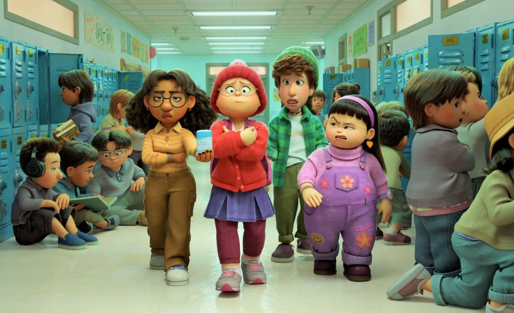
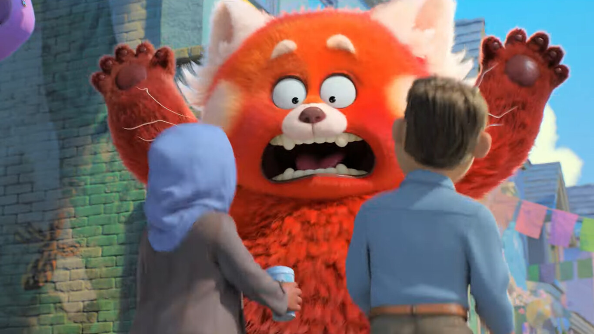

'Red' es la película más divertida de Pixar en mucho tiempo: un estupendo coming of age adolescente con toques de anime
El cine de Pixar empezó siendo divertido por encima de todo. No le faltaba ambición ni una gran capacidad para tocar la fibra sensible del espectador, pero su objetivo primario no era ese. Con el paso de los años, la ambición del estudio fue girando hacia historias más ambiciosas, donde casi siempre había escenas muy divertidas, pero quedando esto a menudo en un segundo plano.
De hecho, la llegada de 'Luca' el año pasado supuso el regreso de la cara más ligera de Pixar, mientras que 'Red', la cual podrá verse en Disney+ a partir del 11 de marzo, es el turno de que su faceta más cómica vuelva a ser el epicentro de la historia. Además, cuenta con rasgos más propios del anime para dar forma a una película estupenda que probablemente también sea la más diferente del estudio hasta ahora gracias a su perspectiva femenina.
El humor por encima del resto
No me olvido de que ya hemos tenido otras aventuras del estudio con protagonista femenina como 'Brave', 'Del revés (Inside Out)' o 'Buscando a Dory', pero en 'Red' se va mucho más allá de eso al contar con un equipo creativo liderado exclusivamente por mujeres, destacando además por ser la primera película de Pixar dirigida en solitario por una mujer.
No me cabe duda de que todo ello ha sido fundamental para que 'Red' ofrezca un acercamiento nunca visto hasta ahora en el estudio, ya que el retrato de la joven protagonista está marcado por la frescura, pero también por la preocupación de equilibrar su decidida apuesta por la diversión con la necesidad de que resulte creíble para que el público tenga más fácil conectar con ella.
Es verdad que 'Red' no deja de ser la historia de cómo una adolescente descubre qué es lo que quiere ser, algo que está muy marcado por la relación con su madre, siendo bastante sencillo anticipar qué es lo que va a acabar sucediendo. Sin embargo, lo importante son los detalles y lo nuevo de Pixar sobresale por ahí, en parte por su enfoque femenino, pero sobre todo por lo trabajada que está a todos los niveles.
En lo puramente visual, 'Red' se aleja de la tendencia al hiperrealismo para abrazar de lleno su naturaleza de dibujo animado. Es ahí donde el evidente coqueteo con el anime es más evidente, buscando remarcar mucho la expresividad de sus personajes, con especial atención a su rostro en general y a sus ojos en particular.
Además, se nota que hay alguien detrás midiendo al detalle cuándo se producen esas desviaciones para que sean una prolongación natural del enfoque que se le da a la historia y las características de sus personajes que un mero añadido excéntrico. Aquí es un añadido esencial para dar forma a ese Toronto de principios de siglo XXI y la realidad como adolescente de su protagonista.
Muy inspirada en todos los frentes

En oposición a ello tenemos un solvente retrato de las tradiciones familiares, tirando de ahí para introducir ese elemento fantástico esencial para dar un toque realmente distintivo a la función. Uno de los grandes méritos de 'Red' es saber equilibrar esas dos realidades sin olvidarse nunca de que aquí lo que prima por encima de todo es la comedia, pero no la búsqueda desesperada del gag, sino buscando integrar el humor como una constante dentro de la historia que está contando.
Por ese lado, 'Red' se preocupa de rodear a la protagonista de todo lo necesario para potenciar y complementar su forma de lidiar con el tema del panda rojo. La película desborda una energía juvenil muy bien entendida tanto en lo referente a su grupo de amigas como en su pasión por una boy band. Hay una sensación de que logra captar en su totalidad lo que supone ser una adolescente en lugar de ofrecer una visión más o menos sesgada.
Hay alegrías, contratiempos, traiciones y otros elementos asociados a una etapa de transformación a todos los niveles, todo perfectamente secundado con un impecable trabajo de animación en el que también se nota la búsqueda de una identidad propia por parte de Domee Shi, directora y coguionista de 'Red'. Aquí no vale con un acabado técnico irreprochable, pues en todo momento queda la idea de que hay un plan detrás y todo está orientado a conseguirlo.
Y sí, a partir de todo eso hay espacio para dar ese toque emocional marca de la casa -pero sin necesidad de apuñalar el corazón del espectador-. Poco importa que sea fácil anticipar lo que está por venir, ya que 'Red' triunfa tanto en el camino que uno acaba entregado cuando esa faceta pasa a primer plano, no sin antes coquetear de forma muy acertada con otro subgénero asociado en sus orígenes al cine asiático.
En resumidas cuentas
No voy a deciros que 'Red' sea la mejor película hasta ahora de Pixar, ya que sería mentira -el nivel es altísimo entre los títulos más logrado de la compañía-, pero sí es un trabajo inspiradísimo que propone algo diferente y al mismo tiempo recupera el lado más divertido del estudio. Primero divertir y de paso aprovechar para emocionar. No creo que tarde demasiado en volver a verla.
Fuente: ESPINOFF